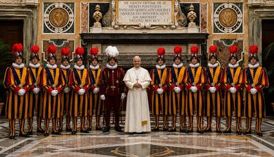

Cuando se habla del Vaticano, la mayoría de los católicos imagina un pequeño Estado dedicado exclusivamente a la oración, la liturgia y los asuntos «espirituales». Pocos saben que también posee un cuerpo militar permanente: la «Guardia Suiza Pontificia», encargada de la protección del papa y de la seguridad del Estado de la Ciudad del Vaticano.


El hecho resulta contrastante. Después de todo, el papa es presentado por la Iglesia como el representante de «Dios» en la Tierra, y si un ser omnipotente protege de forma especial su Iglesia, cabría preguntarse por qué necesita una fuerza militar profesional entrenada para enfrentar amenazas tan mundanas.
Pero sucede que los ejércitos al servicio de los papas no son ninguna novedad. Durante más de un milenio, los pontífices gobernaron extensos territorios conocidos como Estados Pontificios, y para conservarlos recurrieron, como cualquier otro gobernante europeo, a alianzas militares, tropas propias y contingentes mercenarios. En ese contexto existió un Ejército de los Estados Pontificios, que fue disuelto oficialmente en 1870, cuando el Reino de Italia anexó Roma y puso fin al poder temporal de los papas sobre aquellos territorios.
Por supuesto, esta realidad histórica contrasta con la imagen de una Iglesia «espiritual» y desligada de la violencia. Pero los mismos pontífices que predicaban el amor al prójimo, el perdón y el mandato de «poner la otra mejilla» (Lucas 6:29), administraron un Estado que recurría a la fuerza armada cuando consideraban amenazados sus intereses políticos o territoriales. O sea, mientras los Evangelios ponen en boca de Jesús frases como «vende lo que tienes y dalo a los pobres» (Mateo 19:21), los papas destinaron durante siglos recursos a mantener soldados y fortificaciones, para defender sus intereses y posesiones materiales.
Y la actual Guardia Suiza nació en ese entorno. En 1479, el papa Sixto IV firmó un acuerdo con la Confederación Suiza, que facilitó el reclutamiento de mercenarios de aquel país para el servicio pontificio. Y finalmente, el 21 de enero de 1506, el papa Julio II creó oficialmente la Guardia Suiza Pontificia, llegando al Vaticano al día siguiente 150 soldados dirigidos por Kaspar von Silenen, iniciando así una tradición que continúa hasta nuestros días.
Pero lo interesante es que, contrario a la imagen casi folclórica que suele proyectarse, la Guardia Suiza nunca fue concebida como un simple «cuerpo ceremonial». Desde sus orígenes, fue una unidad militar destinada a proteger físicamente al pontífice. Sus integrantes son combatientes que han participado en diversas acciones bélicas, siendo la más conocida la defensa del papa Clemente VII durante el saqueo de Roma del 6 de mayo de 1527. Una batalla en que murió la mayoría de los guardias, mientras permitían la huida del pontífice hacia el Castillo de Sant’Angelo. Un episodio que sigue siendo de los principales símbolos históricos del cuerpo. «Héroes que entregaron su vida por el papa». ¿Pero no contradice esto los principios cristianos?
Hoy vemos a los miembros de la Guardia Suiza vistiendo sus vistosos uniformes renacentistas y portando sus alabardas. Por lo general su diseño se atribuye nada menos que a Miguel Ángel Buonarroti. Sin embargo, su verdadero autor sería el Comandante de la Guardia Jules Répond (1910-1921), quien se inspiró en los frescos del pintor italiano del Renacimiento, Rafael. Y sin duda su apariencia contribuye a transmitir una imagen casi turística, pero es sólo una apariencia, porque la Guardia Suiza es en realidad una fuerza de seguridad muy profesional, cuyos integrantes reciben formación militar y entrenamiento continuo para responder a atentados, ataques armados y situaciones de alto riesgo.
Aunque el público suele asociarlos únicamente con su lanza o alabarda ceremonial, disponen de armamento moderno para cumplir sus funciones de protección. Sus integrantes reciben instrucción con arma corta de servicio, subfusiles y fusiles de asalto utilizados por unidades de seguridad contemporáneas, además de otros equipos especializados cuya composición exacta no se divulga por razones de seguridad. Así que su uniforme histórico forma parte del ceremonial, pero la verdadera capacidad operativa del cuerpo descansa en entrenamiento moderno, protocolos de protección y armamento contemporáneo.
La selección de los miembros de la Guardia Suiza refleja también ese carácter profesional. Los aspirantes deben ser ciudadanos suizos, católicos practicantes, haber completado su formación militar en las Fuerzas Armadas Suizas, presentar un historial personal intachable, y cumplir exigentes requisitos físicos y disciplinarios. No se trata pues, de simples guardianes protocolarios, sino de personal altamente preparado para proteger al jefe de un Estado soberano.
Y obviamente, mantener esta fuerza también tiene un costo. La Guardia Suiza forma parte del sistema de seguridad del Estado de la Ciudad del Vaticano, cuyos gastos son asumidos directamente por dicho Estado. Y diversas estimaciones públicas sitúan el costo anual del cuerpo entre 4,5 y 5 millones de euros, cifra destinada a sostener un contingente oficial de aproximadamente 135 integrantes, incluyendo salarios, entrenamiento, alojamiento, mantenimiento, equipamiento y demás gastos operativos.
Es decir, aunque la Guardia Suiza tiene un estatus único, legal y ceremonial, técnicamente y por definición histórica es un cuerpo mercenario. Para Suiza es un caso único, puesto que su Constitución prohíbe a sus ciudadanos servir en ejércitos extranjeros como mercenarios, pero su legislación otorga una excepción exclusiva a la Guardia Suiza Pontificia, calificándola de «guardia de seguridad interna» o «policía doméstica» del Vaticano.
Desde una perspectiva estrictamente política, la existencia de este cuerpo resulta perfectamente comprensible. El Vaticano es un Estado soberano, y el papa es un jefe de Estado que constituye un objetivo potencial para organizaciones terroristas, individuos violentos o personas con trastornos mentales. Y cualquier gobierno responsable adopta medidas para proteger a sus máximas autoridades. Sin embargo, desde una perspectiva religiosa, surge una paradoja difícil de ignorar.
La Iglesia sostiene que el papa ocupa un lugar único dentro del plan de «Dios», que el Espíritu Santo guía a la Iglesia y que «Dios» vela especialmente por ella. Pero si tales afirmaciones son literalmente ciertas, ¿por qué resulta indispensable mantener soldados profesionalmente entrenados, planes de evacuación, protocolos antiterroristas, inteligencia preventiva y armamento moderno? La respuesta práctica parece evidente: porque el Vaticano actúa exactamente igual que cualquier otro Estado del mundo. Es decir, prefiere asumir una actitud realista y admitir con sus actos que sólo puede confiar su seguridad a personas de carne y hueso, no a imaginarias intervenciones sobrenaturales de seres inexistentes. Por tanto, la existencia de la Guardia Suiza constituye un reconocimiento evidente de cómo funciona el mundo real. Las amenazas se enfrentan mediante entrenamiento, planificación, tecnología, inteligencia y personal especializado, no con oraciones ni esperando milagros.
Pero quizá lo más sorprendente es que muchos católicos desconocen por completo esta realidad. Para buena parte del público, aquellos hombres vestidos con coloridos uniformes renacentistas, son poco más que un atractivo turístico. Muy pocos saben que son en realidad soldados usando un uniforme de camuflaje, y que detrás de esa imagen ceremonial existe una unidad militar profesional encargada de proteger al jefe de Estado del Vaticano, utilizando equipamiento militar propio del siglo XXI.
Hoy, después de más de quinientos años de historia, la Guardia Suiza sigue recordando una realidad difícil de conciliar con el discurso religioso tradicional: incluso la institución que afirma representar a «Dios» en la Tierra, considera indispensable confiar su supervivencia a soldados, entrenamiento y armas; no a la protección sobrenatural que predica.
[Godless Freeman]
https://es.wikipedia.org/wiki/Ej%C3%A9rcito_de_los_Estados_Pontificios
https://es.wikipedia.org/wiki/Guardia_Suiza_Pontificia
Comentarios
Comments powered by Disqus